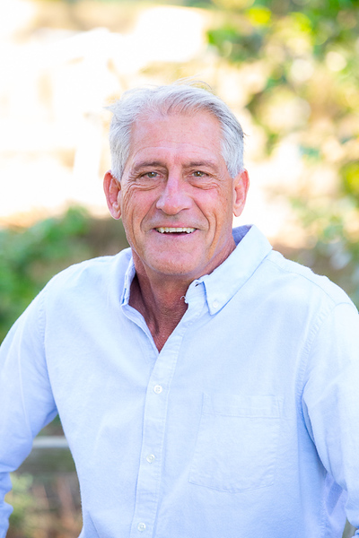

My four years on the council and four decades in Hermosa have shaped a clear set of priorities. Here’s where I stand and what I’m pushing for next.

Public safety and traffic are the issues I hear about most from residents—and ones I’ve experienced firsthand, both as a longtime Hermosa resident and through my years chairing Redondo Beach’s Traffic, Public Works & Preservation Commission. As a CERT member and Red Cross disaster volunteer, I also bring hands-on emergency-response experience to the table.
My plan: push for concrete safety improvements at the corridors and intersections residents raise most, while keeping the city’s emergency-response capacity strong.
As Hermosa heads into a period of tighter budgets, I believe the city has to be more disciplined and more transparent about where every dollar goes—not less. Residents shouldn’t have to dig to understand how their city is spending their money.
My plan: push for clearer public reporting on city spending and hold new spending commitments to a higher standard.
Hermosa’s small businesses are central to what makes downtown work. I’ve focused on reducing the bureaucratic friction that makes it harder than it should be to open, operate, or grow a business here.
My plan: keep cutting red tape so Hermosa’s business community can thrive.
My environmental commitment goes back decades—as an elected Sierra Club board member for the Palos Verdes/South Bay Group, a longtime Heal the Bay volunteer, and a Storm Water Monitor & Educator with Santa Monica Baykeeper/LA Waterkeeper. That work is personal to me: Hermosa’s beach and coastline are why so many of us live here.
My plan: bring that hands-on environmental experience directly into city policy.
I’ve spent four decades in this community, including time with the Hermosa Beach Historical Society and Sister City Association. I believe growth and development shouldn’t come at the cost of the small-town beach character that brought so many residents here in the first place.
My plan: balance new development with the character and history residents care about.